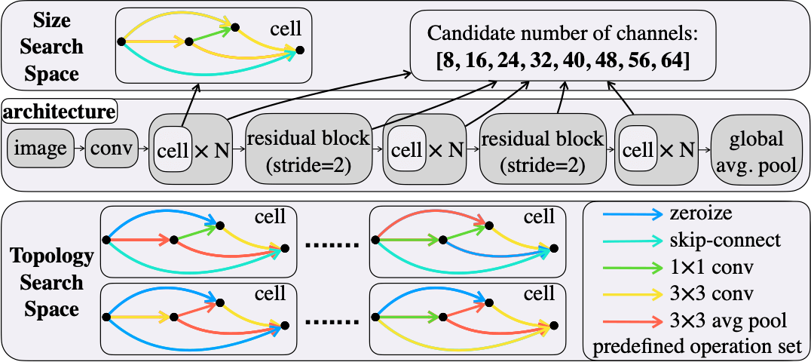
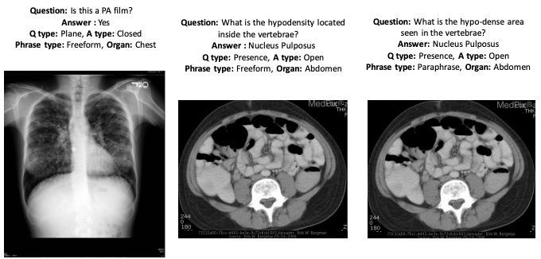

|
Anisha Pal
Update: I am actively looking for full-time positions in the industry starting May 2024. Please reach out to me at apal72@gatech.edu if you think I am a good fit for your team.
I am a second year MS student in the Department of Computer Science at Georgia Tech. I am currently pursuing my Graduate Research under Dr.Judy Hoffman, where I am working on problems related to robustness and domain adaptation in computer vision.
My primary research focus revolves around the development of robust and efficient deep learning-driven computer vision algorithms for geospatial data with applications in climate change, conservation, and sustainability .
My background features various projects and internships, focusing on computer vision, geospatial applications, and sustainability. In the summer of 2023, I interned at Corteva Agriscience's R&D Data Science team, enhancing low-res satellite imagery through super-resolution for improved downstream computer vision tasks.
Additionally, I have two years of work experience as a Machine Learning Engineer at HyperVerge, Fintech and Geospatial startup based out of India developing computer vision solutions for geospatial analysis and face spoof detection.
In my free time, I enjoy trekking, camping, adventure sports, reading, and discussing music across genres and cultures.
CV /
Google Scholar /
LinkedIn /
Github
|

|

|
SkyScenes: A Synthetic Dataset for Aerial Scene Understanding
Sahil Khose*,
Anisha Pal*,
Aayushi Agarwal*,
Deepanshi*,
Judy Hoffman
Prithvijit Chattopadhyay
* Indicates equal contribution
Under Submission
pdf
/
link
/
code
/
data
/
website
/
|

|
SegFast-V2: Semantic image segmentation with less parameters in deep learning for autonomous driving
Swarnendu Ghosh,
Anisha Pal,
Shourya Jaiswal,
Nibaran Das,
Mita Nasipuri
International Journal of Machine Learning and Cybernetics, 2019
pdf
/
link
/
code
/ |

|
SegFast: A Faster SqueezeNet based Semantic Image Segmentation Technique using Depth-wise Separable Convolutions
Anisha Pal,
Shourya Jaiswal,
Swarnendu Ghosh,
Nibaran Das,
Mita Nasipuri
ICVGIP, 2018
pdf
/
link
/
code
/
|

|
Graduate Student Researcher at Hoffman Lab | Jan 2023 - Present
Working under the supervision of Prof.Judy Hoffman
Exploring synthetic-to-real generalization of computer vision applications for aerial imagery and analyzing the effects of intra domain shifts
|

|
Machine Learning Intern Corteva Agriscience | May 2023 - Aug 2023
Designed and implemented image super-resolution algorithms on Sentinel-2 satellite imagery using transformer architecture for the downstream task of improving field boundary detection on agricultural land
Achieved a PSNR value of 36 dB and SSIM value of 0.81 on the curated test set
Performed data cleaning and satellite image preprocessing such as tile splitting, merging and georeferencing, generating feasible Sentinel2 composites with minimum cloud cover
Conducted a study on the feasibility of using GANs and Diffusion Models for the specific problem set
|
|
|
Graduate Research Assistant at CQGRD | Aug 2022 - May 2023
Designed the objective criteria and performed suitability analysis to rank parcels within Henry County based
on their suitability for freight related construction and transportation by taking into account environmental,
socio-economic, logistical and transportation factors
Designed the decision support tool using ArcGIS to quantify the impact of freight development while
channeling growth towards social, environmental and economic resilience
|

|
Machine Learning Engineer at Hyperverge | Dec 2019 - July 2022
Led the development of a custom passive video liveness solution incorporating a vision transformer-based,
multi-channel architecture with optimized frame sampling techniques for detecting Face Presentation At-
tacks and achieving a consistent score of over 99% on research benchmarks and in production environments..
Led the AI efforts of the Geospatial team, designing a unique change detection and classification system
on large-scale satellite/aerial imagery. Implemented a hybrid approach utilizing segmentation models,
automatic imagery alignment, vectorization, and shape enhancement techniques, achieving a consistent F1
score of over 90% across various geographies and significantly improving property tax collection efficiency.
|
| 
|
NAS Latency Predictor
Creating the first dataset of its kind for training HW-NAS latency predictors by expanding the NATS-Bench dataset to include hardware-specific latency measurements and descriptors across various GPUs, CPUs, and Edge devices.
Developing a latency predictor that generalizes to unseen hardware and model architectures without sample measurements on the critical inference path
|
| 
|
Medical VQA
Analyzed the importance of different VQA components and designed an easy to use lightweight framework that is able to achieve results comparable to state of the art on VQA-RAD dataset
The work highlights the importance of encoder selection and offers a practical solution for VQA in the medical domain
|

|
Aye-Aye monitoring
As a member of UC, San Diego, Engineers for Exploration collaborated with San Diego Zoo to develop a real-time machine learning system to monitor and analyze behavioral cues in Aye-Aye for early detection of health issues.
|

|
Black Box Optimization
Conducted extensive survey and experimentation on the different Hyperparameter Optimization techniques
such as Turbo, Hyperopt, PySOT, and Nevergrad as part of the BBO challenge.
Identified the advantage
of trust-region based exploration-exploitation provided by Turbo and the superior candidate selection
method (TPE) used by Hyperopt to design a hybrid approach.
|

|
Adversarial Defense
Trained neural networks that are robust to post-hoc pruning using Targeted Dropout. The idea was
to cut off the snow-ball effect of error buildup in the network’s activations by removing the impact of
most weights.
Tested the feasibility of this technique by experimenting with FSGM and PGD attacks on
CIFAR 10/100 datasets implemented on ResNet models augmented with Targeted Dropout.
|

|
Satellite Imagery Based Shoreline Monitoring System
Attempt at developing an automated system to monitor shifting shoreline trends in high-impact regions of the
world using satellite imagery (Landsat, SPOT) and deep learning based segmentation techniques.
Achieved an accuracy of 97% in delineating shorelines in sandy beaches worldwide through
semi-supervised learning techniques on a custom dataset using a 3 class approach (sea, land, and runup) to counter tidal noise.
|
Education
|
|
Master of Science in Computer Science
Georgia Institute of Technology, Atlanta | Aug 2022 - Present
Specialization in Machine Learning
|

|
Bachelor of Technology in Electronics & Communication Engineering
Manipal Institute of Technology, Manipal | July 2016 - June 2020
Minor Specialization in Data Science
Reference
|
| |